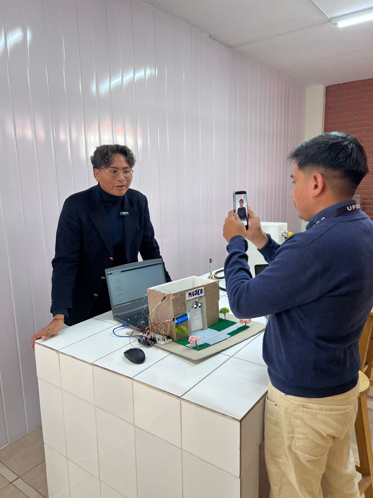
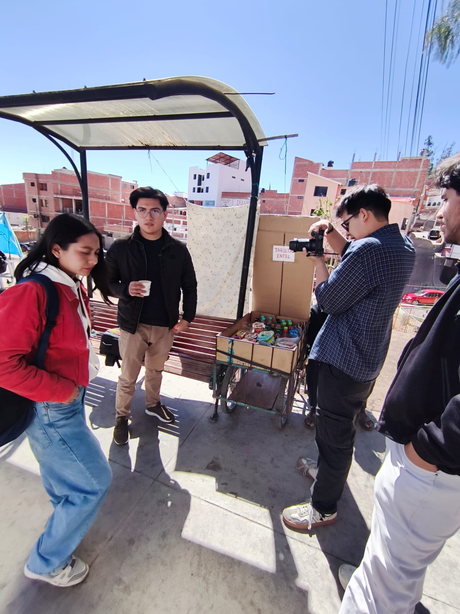
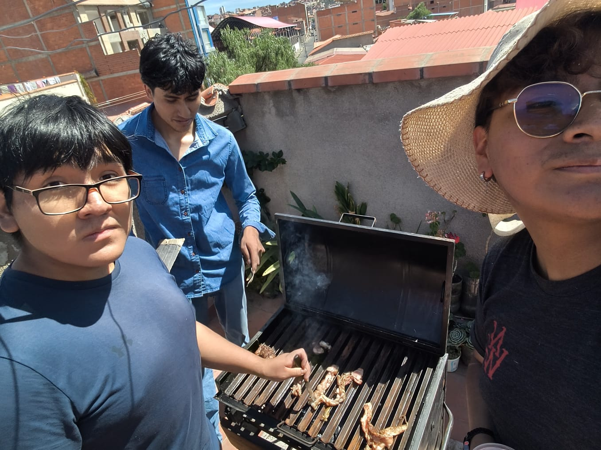
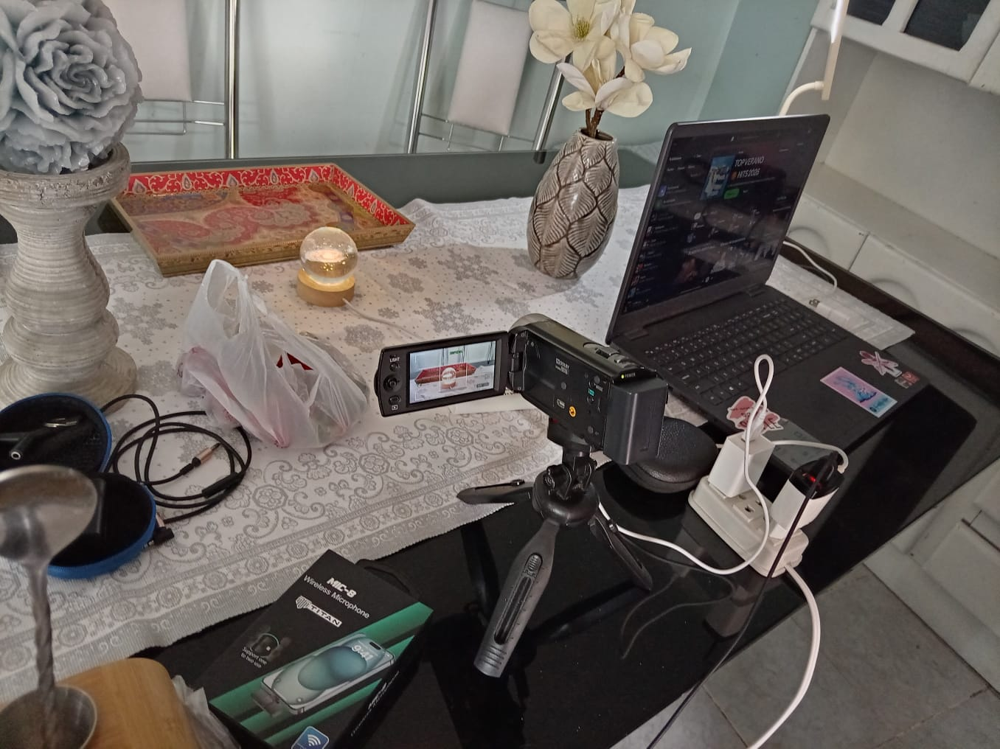
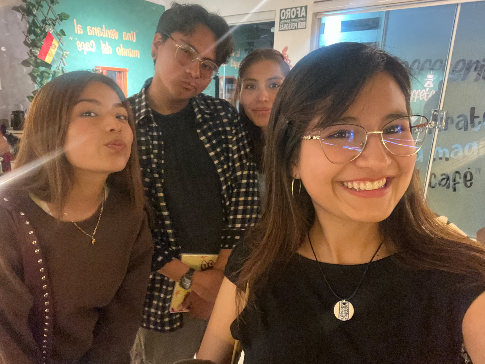
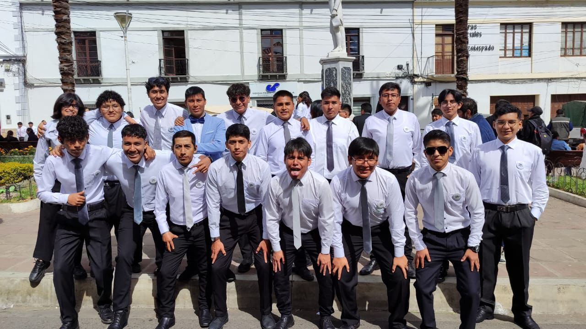
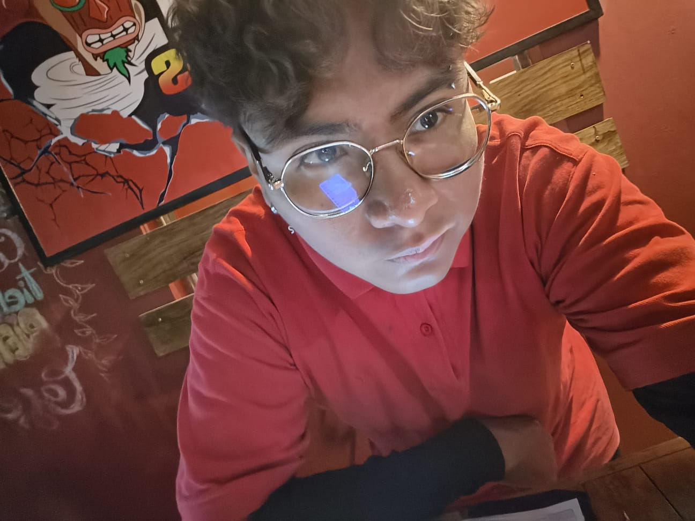

Hola, soy Alan Abdiel Zapata
Estudiante de Ingeniería en Sistemas
Tengo 22 años y soy una persona con ganas de aprender, adquirir nuevas experiencias y seguir creciendo tanto personal como profesionalmente.
Conoce más sobre míSobre mí
Actualmente estudio Ingeniería en Sistemas. Me interesa aprender sobre tecnología, desarrollar nuevas habilidades y conocer diferentes áreas del mundo laboral.
Mi personalidad
Me considero una persona responsable, trabajadora, sociable y con disposición para aprender y trabajar en equipo.
Mis intereses
Me gusta combinar mis estudios con nuevas experiencias, conocer personas y desarrollar habilidades en diferentes actividades.
Formación académica
Ingeniería en Sistemas
Actualmente me encuentro cursando la carrera universitaria y fortaleciendo mis conocimientos en programación, tecnología y sistemas.

Experiencia laboral
Cajero y apoyo en parrilla
Trabajo de lunes a sábado durante las tardes, realizando actividades de atención al cliente, manejo de caja y apoyo en la preparación de alimentos en la parrilla.
Mesero
Durante los fines de semana trabajo como mesero en una pensión, brindando atención a los clientes, tomando pedidos y colaborando con el servicio.
Mis pasatiempos e intereses

Fotografía
Me gusta capturar momentos, experimentar con imágenes y desarrollar mi creatividad.

Cocina
Disfruto preparar alimentos, conocer recetas y aprender nuevas técnicas de cocina.

Marketing
Me interesa la publicidad, las redes sociales, la creatividad y las estrategias para promocionar productos y servicios.
Mis metas y experiencias
Mis metas personales
Una de mis principales metas es seguir creciendo como persona, adquirir nuevas experiencias, conocer diferentes lugares y cumplir los objetivos que me propongo.

Un viaje por cumplir
Una de mis experiencias más esperadas es viajar a Buenos Aires, Argentina, en 2027 junto a mis dos mejores amigas para asistir al concierto de NSQK. Es un viaje que representa amistad, diversión y la oportunidad de conocer un nuevo lugar.

Mi futuro profesional
Quiero terminar mi carrera de Ingeniería en Sistemas en la UPDS, mejorar mis conocimientos en programación y desarrollar proyectos que me permitan crecer profesionalmente.

Experiencias laborales
Mis trabajos en Huracán de Sabores y Mil Gramos de Sazón me permiten adquirir experiencia en atención al cliente, responsabilidad, cocina y trabajo en equipo, mientras continúo con mis estudios universitarios.
Contacto
Teléfono: 786707631
Correo electrónico: alanabdielzapata49@gmail.com
Ubicación: Sucre-Bolivia